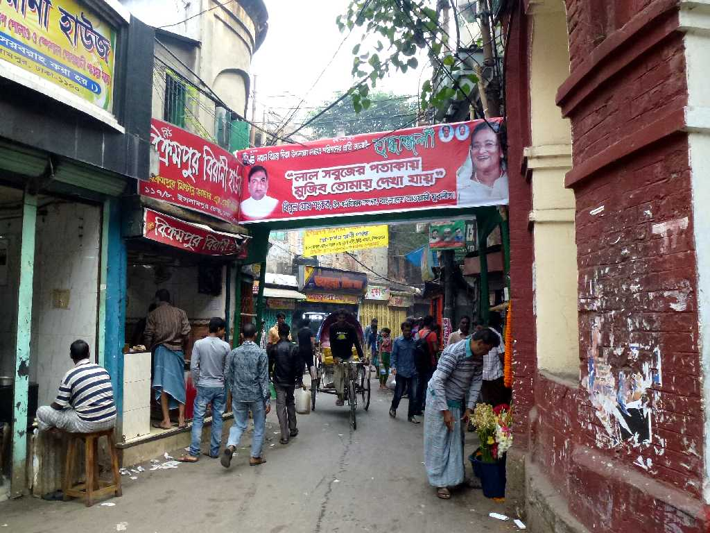
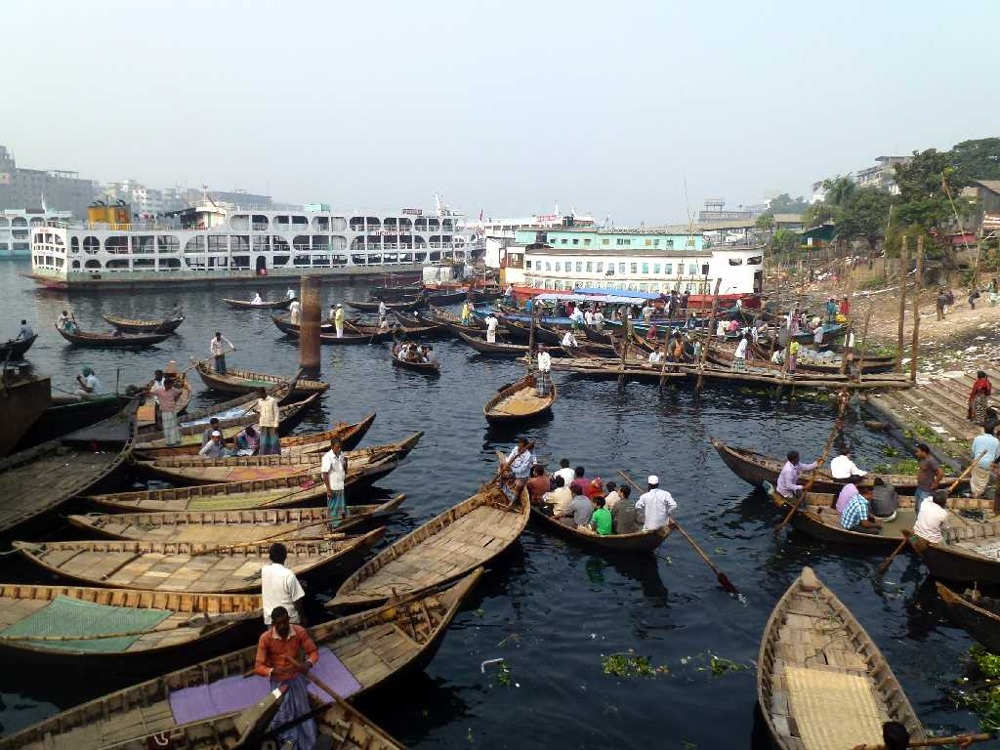
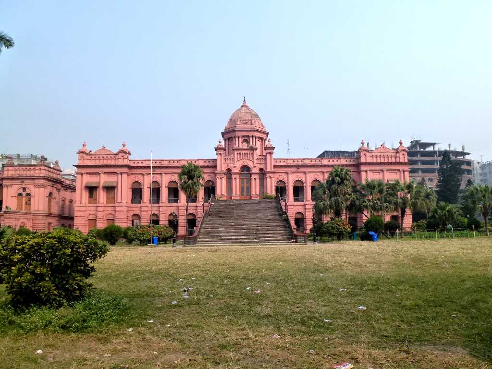
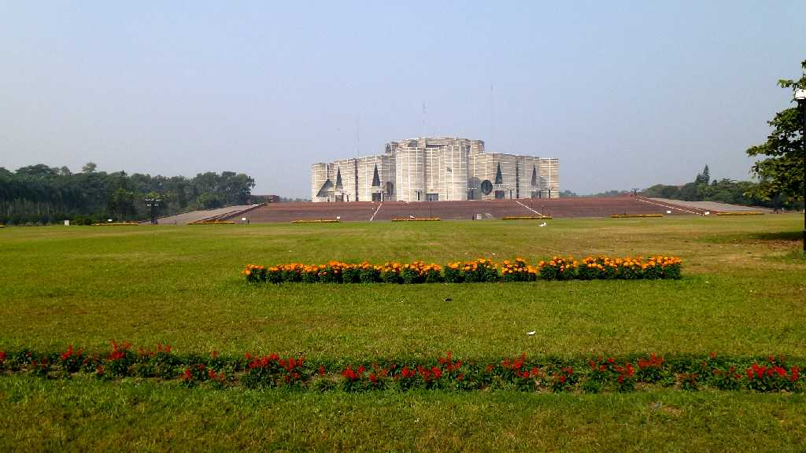
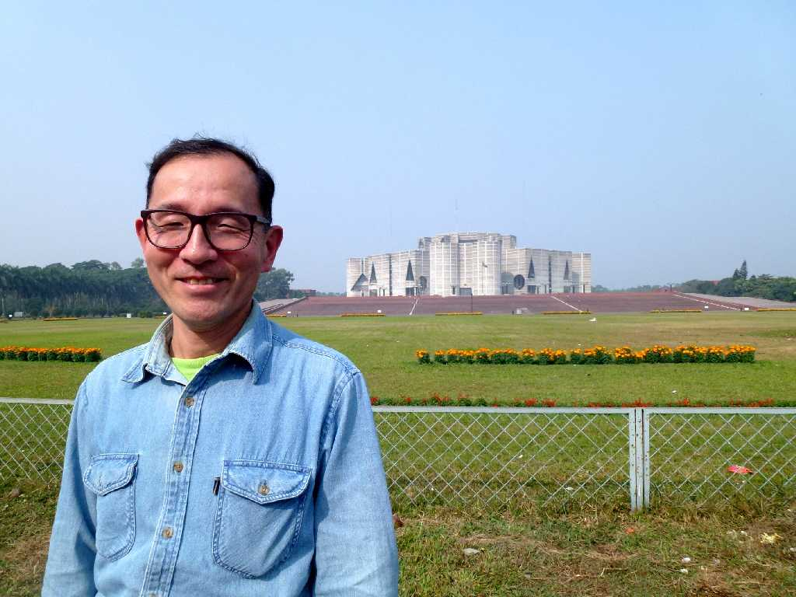

Old Dhaka Dhaka
忙しく混沌としたダッカ旧市街 ダッカは７世紀頃から町となり１２世紀に女神ドケッショリを祀る寺院(Dhakeshwari Temple)が創られるとダッカと呼ばれる様になった

Sadarghat Old Dhaka
ブリゴンガ川に面する地方都市とを結ぶ船着場があるショドルガットの港

Ahsan Manjl (Pink Palace) Old Dhaka
１８３０年にフランスのトレードセンターとして創建されたのちダッカ・ナワーブ家の邸宅として使用されたアシャン・モンジル

Jatiyo Sangshad (Bangladesh Parliament) Dhaka
バングラデシュの国会議事堂で１９６２年創建された

December 12 2013 Jatiyo Sangshad
湖や自然に囲まれた幾何学的建物で忙しいダッカの街とは別世界